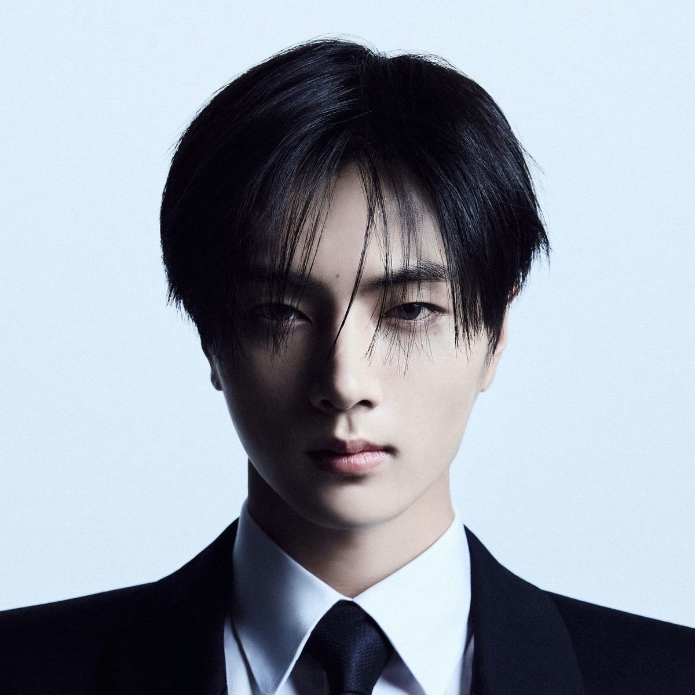
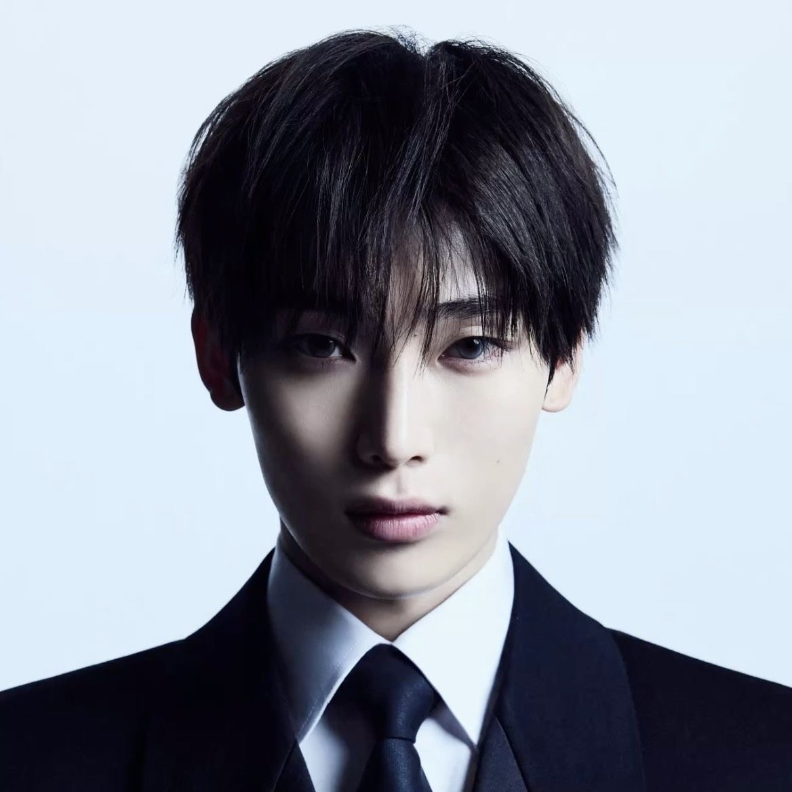
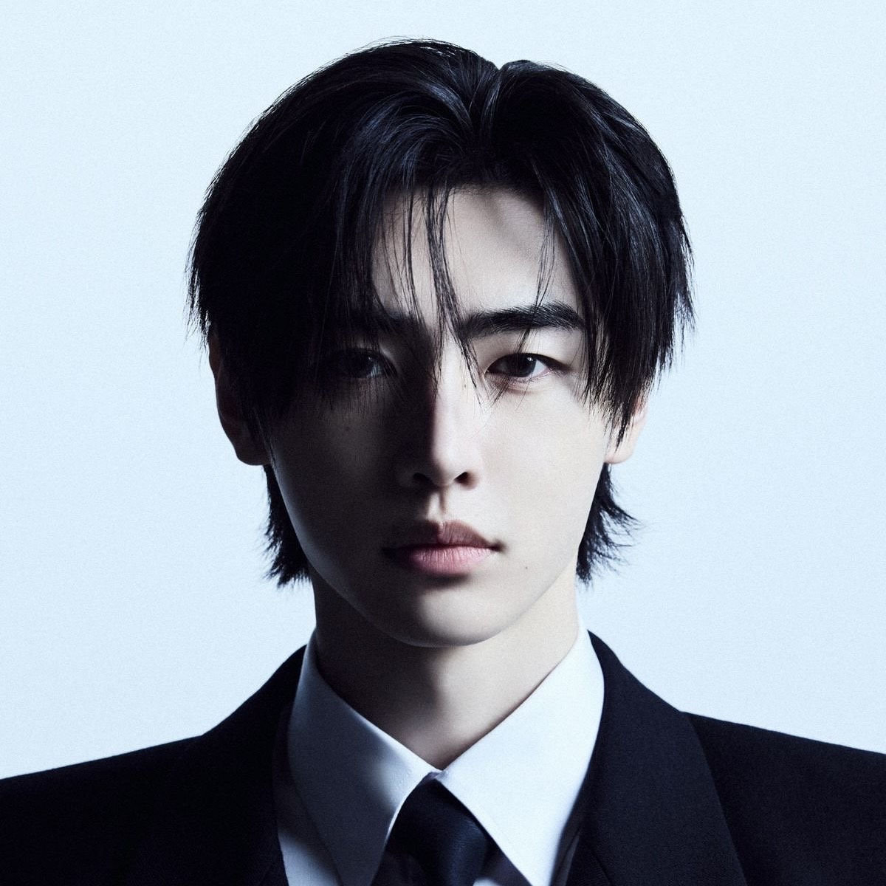
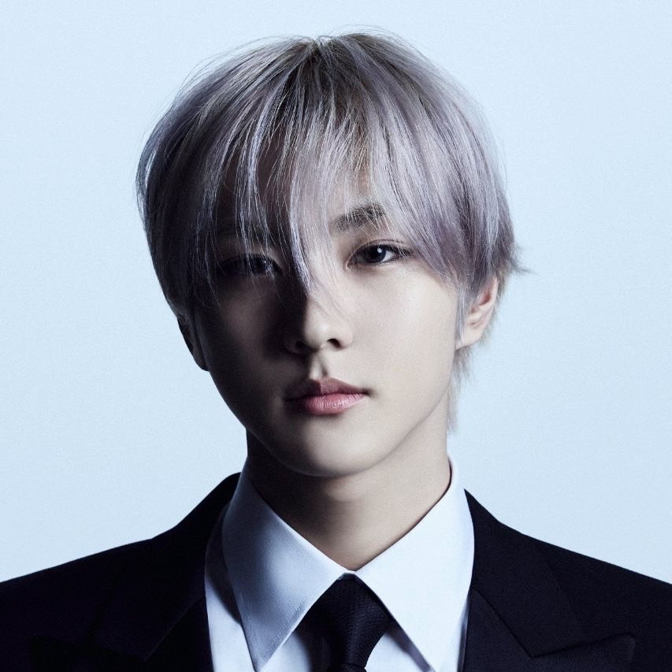

A Guide to Enhypen
Enhypen (엔하이픈) is a South Korean boy band formed in 2020 through the survival competition show I-LAND, jointly produced by CJ ENM and Big Hit Entertainment. The group consists of seven members: Jungwon, Heeseung, Jay, Jake, Sunghoon, Sunoo, and Ni-ki. Find out more by clicking the tabs above! Their fandom name is ENGENE, which is derived from the words “engine” and “gene.”
Ni-Ki

Sunoo
Sunghoon

Jake

Jay
Heeseung

Jungwon
Members
| Stage Name | Full Name | Birthday / Age | Height | Blood Type | MBTI | Position | Introduction | Fun Facts |
|---|---|---|---|---|---|---|---|---|
| Jungwon | Yang Jungwon | February 9, 2004 (21 years old) | 175 cm (5′9″) | AB | ISTJ | Leader, Vocalist, Dancer | Jungwon is the leader of ENHYPEN and was chosen for his dependable, thoughtful personality and natural leadership qualities. As the final winner of the survival show I-LAND, he earned the respect of both fans and members. Jungwon brings a calm and composed energy to the group, often guiding others with quiet strength. |
- Has a dog named Maeumi. - Favorite color is blue. - Known for his habit of blowing his hair and saying “yoi”. - Former trainee at SM and BigHit. |
| Heeseung | Lee Heeseung | October 15, 2001 (23 years old) | 183 cm (6’0”) | A | ISTP | Main Vocalist, Center | Heeseung is the all-rounder of the group, known for his strong vocals, dance, and songwriting abilities. Often called the “ace” of ENHYPEN, he stands out with his stage presence and musicality. He trained for over 3 years before debuting and is seen as a dependable and skillful performer. |
- Has perfect pitch and helps with song production. - Favorite colors are purple and ivory. - His role model is his father. - Former BigHit trainee and close friends with TXT members. - Part of a friend group called “ee-z”. |
| Jay | Park Jongseong | April 20, 2002 (23 years old) | 180 cm (5′11″) | B | ENTJ | Main Rapper, Lead Dancer, Vocalist | Jay is the energetic and expressive member of ENHYPEN. Born in the U.S. and raised in South Korea, he brings a global background and bilingual charm. He’s known for being outspoken, confident, and humorous — often lighting up the room with his personality and quick wit. |
- Fluent in English and Korean. - Favorite color is purple. - Loves cooking and once dreamed of being a chef. - Ticklish and enjoys shopping and games. - Trained at LP Dance Academy. |
| Jake | Sim Jaeyun | November 15, 2002 (22 years old) | 175 cm (5′9″) | O | ISTJ | Lead Vocalist, Lead Dancer | Jake is a bright and dedicated performer who grew up in Australia. He trained for less than a year before debuting, but quickly impressed fans and trainers with his fast improvement. He’s known for being hardworking, kind, and naturally talented in both vocals and dance. |
- Has a dog named Layla. - Plays the violin and enjoys fishing, soccer, and table tennis. - Favorite colors are black and ivory. - Was in an advanced math class in school. - Ranked 3rd in I-LAND’s final votes. |
| Sunghoon | Park Sunghoon | December 8, 2002 (22 years old) | 180 cm (5′11″) | O | ISTJ | Visual, Vocalist, Dancer | Before debuting as an idol, Sunghoon was a competitive figure skater and even won national medals. His graceful movements and poised visuals come from his background on the ice. He brings elegance and charm to ENHYPEN’s performances, earning the nickname “Ice Prince.” |
- Has a dog named Gaeul. - Favorite color is white. - Ranked 6th in I-LAND’s final lineup. |
| Sunoo | Kim Sunoo | June 24, 2003 (22 years old) | 177 cm (5′10″) | O | ENFP | Vocalist | Sunoo is full of charm, known for his expressive face, bright energy, and strong vocals. He was chosen by producers to debut, showing that his charisma and talent stood out beyond just fan votes. He brings warmth and positivity to the group, often called the "mood maker." |
- Favorite colors are purple, pink, and blue. - Loves Disney movies, scented candles, and mint chocolate ice cream. - Has a black belt in hapkido. - Plays the piano. - Created “SunKi Day” with Ni-Ki (24th of every month). |
| Ni-ki | Nishimura Riki | December 9, 2005 (19 years old) | 187 or 190 cm (6’2” or 6’3”) | B | INTJ | Main Dancer, Maknae | Ni-ki is the youngest member of ENHYPEN and their main dancer. He began dancing at a very young age in Japan and quickly earned a reputation for his exceptional talent. Known for his sharp moves and fast memorization skills, he adds power and finesse to the group’s performances. |
- He’s ambidextrous. - Ranked 4th in I-LAND. - Memorizes choreography very quickly. - Started with jazz and ballet training. |